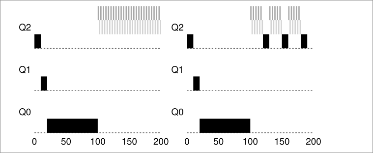

1. The process
Definition: It is a running program
Crux of the problem: How to provide the illusion of many CPUs?
OS creates illusion of many CPUs by virtualizing the CPU.
- Running one process, stopping it and running another, and so forth -> Promotes the illusion that many virtual CPUs exists when in fact there is only one.
- To implement this, the OS needs:
- Mechanisms (Low level machinery): Low level methods or protocols that implement a needed piece of functionality.
- Policies (intelligence): Algorithms for making some kind of decisions within the OS (i.e. the scheduler is an algorithms that makes the decision of which process to run next, don't worry if you don't know yet what an scheduler is, will get to that later).
Formal definition: Abstraction provided by the OS of a running program
At any given type, we can summarize a process by taking an inventory of the different pieces of the system it accesses or affects during the course of its execution
Components of a process:
- Memory (a.k.a address space): Instructions, data that the programs read and writes sits in memory.
- Registers; Many instruction read or update registers.
- Program counter (a.k.a instruction pointer): Tell us which instruction of the program will execute next.
- Persistent storage devices: I/O information might include list of files the process currently has open.
Process API
Usually a process interface of an operating systems includes the following:
- Create: Some method to create a new process.
- Destroy: Interface to destroy processes forcefully.
- Wait: Waiting interface, to wait for a process to stop running.
- Miscellaneous control: Other control that are possible (i.e methods to suspend process, and then resume it).
- Status: Interface to get status information of process.
Process creation
- OS reads executable bytes of executable file from disks and place them in memory somewhere. On simpler OS's the loading process is done eagerly (all at once), in most advanced OS's, this is done lazily (i.e by loading pieces of code or data only as they are needed during program execution)
- OS allocates memory for the program's run-time stack, and it initializes the stack with arguments.
- OS may also allocate some memory for the program's heap. The OS may get involved and allocate more memory to the process to help satisfy heap memory calls (i.e
mallocon C) - OS makes I/O initialization tasks. i.e on Unix like OS, file decriptors 0, 1 and 2 gets assigned to sderr, stdio, stdin.
- Last task for the OS: Start the program running at the entry point, namely
main(), transferring control of the CPU to the newly-created process.
Process states
In a simplified view, a process can be in one of three states:
- Running: Process is executing instructions.
- Ready: The process is ready to run, but the OS has chosen not to start it.
- Blocked: Process has performed some kind of operation that makes it not ready to run until some other event takes place.
Data structures
To keep track of the state of each process, the OS keeps some kind of process list for all processes that are ready and some additional information to track which process is currently running.
In the image we can see the different states a process can be, and what information does the xv6 kernel keeps about a process.
todo
3. Mechanism - Limited Direct Execution
CPU virtualization: Run one process for a little while, then another one, and so forth. By time sharing the CPU, virtualization is achieved.
- Challenges in building this virtualization:
- Performance: How to implement without adding excessive overhead to the system?
- Control: How to run processes efficiently while retaining control over the CPU?
Crux: How to efficiently virtualize the CPU with control?
Basic technique: Limited direct execution
- "Direct Execution" part: Run the program directly on the CPU
- OS wishes to start a program running:
- OS creates a process entry for it in a process list.
- Allocate some memory for it.
- Loads the program code into memory (from disk)
- Locates its entry point, jumps to it and starts running the users' code
- Problems:
- How can the OS make sure the program doesn't do anything that we don't want it to do, while still running efficiently.
- How to do the context switch (stop the program and switch to another process) to time share the CPU thus virtualizing it.
- OS wishes to start a program running:
Problem #1: Restricted operations
Crux: A process must be able to perform I/O and some other restricted operations, but without giving the process complete control over the system. How can the OS and hardware work together to do so?
- Approach: Introduce a new processor mode: user mode
- Code that runs in user mode is restricted in what it can do (i.e it can't issue I/O requests)
- Contrast to user mode: kernel mode - Code that runs in kernel mode can do what it likes.
How can we perform some kind of privileged operation (such as reading from disk) if we are on user mode?
- We provide the user the ability to do system calls.
System calls
They allow the kernel to carefully expose certain key pieces of functionality to user programs, such as:
- Accessing the file system
- Creating and destroying processes
- Communicating with other processes
- Allocating more memory Most OS provide a few hundred calls.
How to do a system call?
- Program executes a special trap instruction.
- Trap instruction jumps into the kernel and raises the privilege to kernel mode
- Once in kernel mode, the system can now perform whatever privileged operation that's needed (if allowed), hence doing the required work for the calling process.
- When it operation it's finished, OS calls a special return-from-trap instruction that returning into the calling user program while reducing the privilege level back to user mode.
How does the trap knows which code to run inside the OS?
- Clearly the calling process can't specify an address to jump to (bad idea since you will be jumping to anywhere into the kernel)
- Kernel controls what code executes upon a trap by setting up a trap table at boot time.
- The OS tells the hardware what code to run when a certain exception event occurs.
- To specify an exact system call, a system-call number is usually assigned to each system call.
- The user code, is responsible for placing the desired system-call number in a register or location on the stack.
- The OS, when handling the system call inside the trap handle, examines the number, ensures it's valid and executes the corresponding code if it is.
Example:
Process want to read a file.
- Program calls the
readfunction with the proper function arguments. readloads the system call number5(for xv6-riscv) into thea7registerreadexecute theecallinstruction to trigger the exception (trap)- Now on kernel mode, it sees that an exception/trap has occurred
- The kernel saves the user registers on to a special place on memory/cpu
- The kernel reads the
a7register, saves the number and calls the system call with the corresponding number - When the system call finishes, it places the resulting return value into register
a0of the user program - Kernel calls
usertrapretfunction which returns to user space and restores the cpu registers - Now back to user space, the user program continues the execution with the result of the system call.
Problem #2: Switching between processes
Crux: How can the operating system regain control of the CPU so that it can switch between processes?
Cooperative approach
The OS trusts the processes of the system to behave reasonably. Processes that run for too long are assumed to periodically give up the CPU so that the OS can decide to run some other task.
- Most processes transfer control of the CPU to the OS by making system calls.
- Processes transfer control to the OS when they do something illegal (dividing by zero, trying to access memory that it shouldn't, etc) Problems:
- Process ends up on an infinite loop, the OS never regains control
- Malicious process intentionally never gives up the CPU
Non-Cooperative Approach: The OS Take Control
- The OS uses a timer interrupt; A device that's programmed to raise an interrupt every so many milliseconds; when the interrupt is raised, the currently running process is halted and a pre-configured interrupt handle in the OS runs.
- OS regained control of the CPU and it can do what it pleases
- On boot time the OS tells the hardware which code to run when a timer interrupts happens.
- On boot time the OS must start the timer
Saving and restoring context
The OS has regained control and now has a decision to make:
- To continue running the currently-running process
- To switch to a different process
Switch to a different process
If the decision if to switch to a different process, the kernel executes a low level piece of code known as a context switch:
- The OS will execute some low-level assembly to save :
- General purpose registers
- PC (program counter)
- Kernel stack pointer of the currently running process
- The OS will restore
- General purpose registers
- PC (program counter)
- Switch to kernel stack of soon to be run process By switching stacks, the kernel does the context switch.
When the OS finally execute a return-from-trap instruction, the soon-to-be-executing process become the currently running process, and thus the context switch is complete.

4. Scheduling
Metrics
Turnaround time:
- Defined as
time of completion-time of arrival - T = TCompletion - TArrival
Response time
- Time of response = Time first run minus time of arrival.
- T = TFirstRun - TArrival
FIFO
- First in first out: The first process to arrive gets executed first.
- Problems:
- Given 3 processes: A, B and C (which arrives at that order). A runs for 100 seconds and B and C for 10 seconds each.
- Time of completion for: A = 100 secs, B = 110 and C = 120. Average 110 secs.
- FIFO behaves poorly on processes of different lengths
Shortest Job First (SJF)
- The shorts job runs first, then the next one and so on.
- Average turn around time for process A, B and C decreases from 110 secs to 50 secs.
- Problems
- If A arrives first and 10 seconds later B and C arrive, we will get similar turnaround time than in FIFO.
Shortest time to completion first (STCF)
- The shortest job to completion runs.
- If process A which takes 100 seconds it's running and a process B which takes 5 seconds arrives 10 seconds later A starts running, we switch to run process B because it will end before.
- Bad response time.
Round Robin
- Runs a jobs for a time slice
- The time slice must be a multiple of the timer-interrupt period
- Better response time
- Shorter time slice makes RR perform better on the response time metric
- Too short makes context switching slow down the systems
- Fair scheduling policies perform poorly on metrics like turn around time but good on metrics like response time. (SJF, STCF)
- Unfair scheduling policies perform poorly on response time and better on turn around time. (RR)
I/O
- If process A has I/O operations: |AAAAA|I/O|AAAAA|
- It spits the process in two, the I/O it's the delimiter
- When the I/O is in progress another process can run (i.e B)
5. Multi-Level Feedback Queue
Goals:
- Minimize turn around time (Time of completion - Time of arrival)
- Problems:
- Minimizing the turnaround time is usually done by running the shortest job first
- We don't know how long a process will take to run.
- Problems:
- Minimize response time
- Problems:
- Usually minimizing response time results in a bad turnaround time
- Problems:
Crux: How to schedule without perfect knowledge
MLFQ: Basic rules
We have a number of queues, each of one has a different priority. At any give time, a job that is ready to run a job is on a single queue. The scheduler chooses the highest priority job to run, if there are many jobs with the same priority, Round Robin it's used on that queue.
- Rule 1: If Priority(A) > Priority(B), A runs (B doesn't)
- Rule 2: If priority (A) == Priority(B), A && B run in RR
- MLFQ varies process priority based on observed behavior:
- If process yields CPU control while waiting or input keyboard, it get's higher priority (short execution times).
- If process uses the CPU for long times without I/O, it get's lower priority.
- Current problems: Highest priority jobs will always get to run, and lowest priority jobs will never run.
1. Change priority
- Rule 3: When a job enters the system, it is placed at the highest priority.
- Rule 4a: If a job uses his entire time slice while running, it's priority it's reduced
- Rule 4b: If a jobs gives up the CPU before the time slice is up, it stays at the same priority level.
- Current problems with MLFQ:
- Starvation: If there are too many high priority processes (short running processes), then they'll use all the CPU time and the long-running jobs will never run.
- A user could trick to make the scheduler think our process is a short job by doing an I/O operation just before the time slice is over, thus keeping our job on the same priority queue. - A program may change its behavior over time; what was CPU bound may transition to a phase of interactivity.
2. Priority boost
To avoid the problem of starvation, we could periodically boost the priority of all the jobs in system.
- Rule 5: After some time period S, move all the jobs in the system to the topmost queue Problems that solves this rule:
- By sitting on the top queue our process are guaranteed not to starve because all jobs in the queue share the CPU in a round-robin fashion.
- If a CPU-bound job has become interactive, the scheduler treats it properly once it has received the priority boost. 
On the left, without priority boost, process in black get's starved once the short jobs arrive to the CPU, on the right however, with a priority boost every 50ms, the long running process it's guarantee to make some progress because it get's boosted to the top queue every 50ms and thus getting to run periodically.
How to set the time period S ?
These values are called voo-doo constants because some form of black magic is needed to set them correctly.
- If S is set too high, long running jobs could starve.
- If S is set too low, interactive jobs mayt not get a proper share of the CPU.
3. Better accounting
How we prevent gaming of our scheduler? We set a time max of how much a process can run, by remembering how long has he run and making the total sum, if it's greater than the max, we decrease his priority. Hence we rewrite rules 4a and 4b:
- Rule 4: Once a job uses up its time allotment at a given level (regardless of how many time it has give up the CPU), it's priority it's reduced. (i.e., it moves down one queue)
Summary:
MLFQ has multiple levels of queue and uses feedback to determine the priority of a given job. History is its guide: Pay attention to how jobs behave over time and treat them accordingly. Refined set of MLFQ rules:
- Rule 1: If Priority(A) > Priority(B), A runs (B doesn't)
- Rule 2: If Priority(A) = Priority(B), A & B run in round-robin fashion using the time slice of the given queue.
- Rule 3: When a job enters the system, it is placed at the highest priority.
- Rule 4: Once a job uses up its time allotment at a given level (regardless of how many times it has given up the CPU), its priority is reduced.
- Rule 5: After some time period S, move all the jobs in the system to the topmost queue.
6. Scheduling - Proportional Share
Based around simple concept: Instead of optimizing for [[4. Scheduling#Turnaround time|turnaround]] or [[4. Scheduling#Response time|response]] time, the scheduler tries to guarantee that each job obtain a certain percentage of CPU time.
Lottery scheduling
Every so often, hold a lottery to determine which process should get to run next; processes that should run more often should be given more changes to win the lottery.
Tickets represent your share
Tickets are used to represent the share of a resource that a process should receive. i.e. If we have two processes A and B, where a has 75 tickets and B has 25 tickets, that would mean that A should receive 75% of the CPU and B 25% of the CPU. The longer these two jobs compete, the more likely they are to achieve the desired percentages.
Ticket mechanisms
Ticket currency
It allow user to allocate tickets among their own jobs in whatever currency hey would like; the system then automatically converts said currency into the correct global value
Example: User A has two jobs, A1 and A2; User B has 1 job, B1. The operating systems gives user A and user B 100 tickets each and user A gives A1 500 tickets and A2 500 tickets while user B gives 1000 tickets to B1.
User A -> 500 (A's currency) to A1 -> 50 (global currency)
-> 500 (A's currency) to A2 -> 50 (global currency)
User B -> 1000 (B's currency) to B1 -> 100 (global currency)
Ticket transfer
- A process can temporarily hand off its tickets to another process
Ticket inflation
- A process can temporarily raise or lower the number of tickest it owns.
- Only valid on scenarios where processes trust one another.
- If any one process knows it needs more CPU time, it can boost its ticket value as a way to reflect that need to the system, without needing to communicate it to the other processes.
How to assign tickets
We could assume that the users know best; in such case, each user is handed some number of tickets, and a user can allocate tickets to nay job they run as desired. -> That's a non solution since we are basically passing the problem to the user.
Stride scheduling
Deterministic fair-share scheduler.
- Stride: Number that's inverse in proportion to the number of tickets a process has.
- Each job in the system has a stride.
- The more tickets, the lower stride.
- Each process has an initial pass value.
- Pick the process to run that has the lowest pass value so far
- When you ran a process, increment its pass counter by its stride.
A simple pseudocode:
curr = remove_min(queue); // pick client with min pass
schedule(curr); // run for quantum
curr->pass += curr->stride; // update pass using stride
insert(queue, curr); // return curr to queue
With lower stride value, you will run the process more times.
- A stride scheduling cycle is when all pass value are equal.
- At the end of each cycle, each process will have run in the same proportion to their ticket values.
Main problem with stride scheduling
- If a new job enters in the middle of our stride scheduling, what should its pass value be? Should it be set to 0? This will monopolize the CPU...
- With [[6. Scheduling - Proportional Share#Lottery scheduling|Lottery Scheduling]] this doesn't happen, if a new process arrives, we just increase the total number of tickets and we go on to the next cycle.
Linux Completely Fair Scheduler (CFS)
Goal: To fairly divide a CPU evenly among all competing processes.
To achieve this goal, it uses a simple counting-based technique know as virtual runtime (vruntime)
- As each process runs, it accumulates
vruntime - Most basic case: Each process's
vruntimeincreases at the same rate, in proportion with real time. - Scheduling decision: CSF will pick the process with the lowest
vruntime - How to know when to switch?
- CSF switches too often: Fairness increases, costs performance.
- CSF switches less often: Near-term fairness, performance increases
sched_latencyis the value CFS uses to determine how long one process should run before considering a switch. CFS divides this value by the number of (n) processes running on the CPU to determine the time slice for a process, ensuring that over this period of time, CFS will be completely fair.
- How it works:
- We have n = 4 processes running, CFS divides the value of
sched_latency(i.e. 48 ms) by n to arrive arive at a per-process time slice of 12 ms. - CSF schedules the first job and runs it until it has used 12 ms of (virtual) runtime.
- Checks to see if there is a job with lower
vruntimeto run instead - In this case there is, CFS switches to any of the other 3 jobs
- Repeat.
- We have n = 4 processes running, CFS divides the value of
7. Address Spaces
Early machines didn't provide much of an abstraction of memory to users, the OS sat in memory (i.e. at address 0) and there would be one running program that currently sat in physical memory and used the rest of memory.
Multiprocessing and time sharing
What we do is leave processes in memory while switching between them, allowing the OS to implement time sharing efficiently.
In the diagram, there are three processes (A, B and C) and each of them have a small part of the 512KB physical memory carved out for them. Assuming a single CPU, the OS chooses to run one of the processes (i.e A), while the others sit in the ready queue waiting to run.
This creates an issue: You don't want a process to access or modify memory of other processes.
The address space
- The address space is the running program (process) view of memory in the system
- Contains all of the memory state of the running program. This is:
- The code of the program
- Stack to keep track of where it is in the function call chain
- Stack to allocate local variables and pass parameters and return values to and from routines
- Heap used for dynamically allocated user-managed memory
Example

- Here we have the program code at the top of the address space, this is because the code has a static size and wont grow.
- Next the heap is located right after the code
- The stack is located at the bottom of the address space
- This placement of both the heap and the stack is to allow them to grow in size while the program is running.
- The heap grows positively and the stack negatively
- This address space is an abstraction provided by the OS, the program isn't really at memory address 0 through 16KB; it is loaded at some arbitrary physical address(es)
Crux: How to virtualize memory
How can the OS build the abstraction of private, potentially large address space for multiple running processes on top of a single, physical memory?
Goals
What the OS should have to implement memory virtualization the right way?
- Transparency: OS should implement virtual memory in a way that's invisible to the running program. The program shouldn't know that is working on virtualize memory.
- Efficiency: OS should make virtualization:
- Time efficient
- Space efficient (not using to much memory to implement virtualization)
- Protection: OS should protect processes from one another, one process should not be able to to access or affect the memory of another process.
8. Mechanism - Address Translation
Introduction
Definition: With address translation, the hardware transforms each memory access(e.g, an instruction fetch, load, or store) changing the virtual address provided by the instruction to a physical address where the desired information is actually located.
- With every memory reference, a translation is done.
- Hardware cannot do this by it's own, OS must manage memory (gets involved so the correct translations take place)
- The main goal it's to create an illusion that the running program has it's own private memory, where only his code and data reside.
Crux
How to efficiently and flexibly virtualize memory?
Example:
Suppose we have the following C program:
// simple.c
int main(void) {
int x = 3000;
x = x + 3;
return 0;
}
To compile this code to assembly you can use gcc, on Linux:
$ gcc -O0 -S -c simple.c -o simple.S
Note: the -O0 part is highly important as it disables compiler optimization, without this, the compiler might realize you aren't doing nothing between int x = 3000; and x = x + 3; and might optimize that into int x = 3003;
This will generate a simple.S assembly file which you can inspect. On x86-64 look for two consecutive instructions movl and addl
The compiler turns this code into assembly, which might look like this (in x86 assembly):
128: movl 0x0(%ebx), %eax
132: addl $0x03, %eax
135: movl %eax, 0x0(%ebx)
In this code snippet:
- Address of
xhas been placed in the registerebx - Value at
ebxit's loaded to the general purpose registereaxusingmovlinstruction. addladds 3 toeax- The final instruction stores the value in
eaxback into memory at that same location.
The address space of this process might look like this:
Here we can see:
- The 3 instruction code sequence is located at address
128 - The value of the variable
xis at address 15KB (on the stack)
When the process run:
- Fetch instruction at address 128
- Execute this instruction (load from address 15KB)
- Fetch instruction at 132
- Execute this instruction
- Fetch instruction at 135
- Execute this instruction (store to address 15KB)
Notes
- From this example program perspective, his address starts at 0 and ends at 16KB
- However the OS might allocated the memory of this program somewhere else in memory (i.e between address 32KB and 48KB )
- The size it's the same however the location differs.
Dynamic (Hardware-based) Relocation
- It's a technique to do hardware-based address translation.
- We'll need two hardware registers within each CPU:
- One is called base register
- The other the bounds (a.k.a limit register)
- This registers allows us to place the address space of a program anywhere in physical memory
- Also called base-and-bounds
Base
Each program is written and compiled as if it is loaded at address zero, however when the program starts running, the OS decides where in physical memory the program is loaded and it set the registers to those values.
When a memory reference happens in the running program, the process translate the memory in the following manner:
physical address = virtual address + base
For example, in the previous example, when this instruction has to be fetched:
128: movl 0x0(%ebx), %eax
The cpu first adds the value of the base register (in this case 32KB) to the 128 to get 32896. This is the physical address of the instruction and now the CPU can fetch and execute this instruction.
Same happens when accessing the value 3000 at address 15KB, the base register value is added to get physical address 47KB.
Bound
The point of this register is to make sure that all addresses generated by the process are legan and within the bounds of the process.
- When a memory reference happens, the process will first check that the memory reference is within bounds (is legal), the bound limit helps with protection.
- It can contain either the size of the address space or the physical address of the end of the address space.
Example translations
We have a process with an address space of size 4KB that has been loaded at physical address 16KB:
| Virtual address | Physical address |
|---|---|
| 0 | 16KB |
| 1KB | 17KB |
| 3000 | 19384 |
| 4400 | Fault (out of bounds |
Operating system issues
There are a few critical junctures where the OS must get involved to implement our based-and-bounds version of virtual memory:
- The OS when a process is created must find space for its address space in memory.
- When a process is terminated, it must reclaim all of its memory to be used by other process. Cleaning all data structures associated with that process
- When a context switch occur, the OS must save and restore the base-and-bound pair when it switches between processes.
- It must provide exception handlers. For example if a process tries to access memory outside of its bounds, the CPU will raise an exception; the OS must be prepared to take action when such an exception arises.
9. Segmentation
Note: MMU = Memory management unit Problem with base-and-bound seen at 8 is that there is a big chunk of "free" space right in the middle, between the stack and the heap. The simple approach of using base and bound register pair to virtualize memory is wasteful and it doesn't help us either when the memory of the program is bigger than the address space.
Crux: How to support a large address space
How do we support a large address space with a lot of free space between the stack and the heap?
Segmentation: Generalized Base/Bounds
Instead of having a base and bounds per address space, we have base and bound per logical segment of the address space.
- Segment: Contiguous portion of the address space of a particular length. In our case, we have code, stack and heap.
- Segmentation allows us to place each one of this segments in different places in physical memory
In this figure we can see the different segments (Stack, Code and Heap) of a process. Each one is located independently of one another and only used memory is allocated space in physical memory, thus large address spaces with large amount of unused address space can be accommodated.
- The hardware structure in our MMU is a set of 3 base and bound register pairs:
| Segment | Base | Size |
|---|---|---|
| Code | 32K | 2K |
| Heap | 34K | 3K |
| Stack | 28K | 2K |
Example translation
If we have a program with the address space of the figure above and is placed on physical memory as the first figure illustrated. *Note: Offset is defined as the "distance" between the virtual address we are referencing and the start of the segment
- Reference virtual address 100 (Code): The hardware adds the
basevalue (see first table) to the offset into this segment (100 in this case). Physical address: 100 + 32KB = 32868 - Reference to virtual address 4200 (heap): The offset of this segment is 4200 minus 4KB because the heap starts at address 4K. Then we add the base value (34K) to the calculated offset (104) to get 34920
- In general the operation is (For positive growing segments):
offset = (virtual mem value - segment start value virtual mem)
physical address = offset + segment base
- For the heap:
- Segment start value at virtual memory = 4KB
- Virtual mem value (the address we want to reference) = 4200
- Base heap value = 34K
- Physical address = (4200 - 4096) + 34816 = 34920
Which segment are we referring
Explicit approach chop up the address space in segments based on the top few bits of the virtual address. If our example we have 3 segments so we need 2 bits to represent each one, hence we will use the top 2 bits of our 14-bit virtual address to select the segment.
-
If the top bits are 00, the virtual address is in the code segment, if it's 01 then it's in the heap segment.
-
If we wanted to refer to virtual address 4200, which can be seen in binary form as:
-
We see that our segment is 01 (Heap) on our offset value in decimal is 104. We add the base register to the offset and we get the physical address
-
If base and bounds where arrays, the hardware would be doing something like this to obtain the desired physical address
// Get top 2 bits of 14-bit VA
Segment = (VirtualAddress & SEG_MASK) >> SEG_SHIFT
/// Now get the offset
Offset = VirtualAddress & OFFSET_MASK
if (Offset >= Bounds[Segment])
RaiseException(PROTECTION_FAULT)
else
PhysAddr = Base[Segment] + Offset
Register = AccessMemory(PhysAddr)
Issues:
- When we use the top two bits and only have 3 segments, one segment of the address space goes unused.
- It limits use of the virtual address space, each segment is limited to a maximum size (4KB in this case because that's the max number that can be represented using 12 bits = 14 bits - 2 top bits). If we want a bigger segment we are out of luck.
Possible fixes:
- Implicit approach: The hardware determines the segment by noticing how the address was formed.
The stack
In our first diagram, we can see that our stack is located at physical memory 28KB but with one critical difference: it grows backwards
- In physical memory it starts at 28KB and grows back to 26KB
- Corresponding to virtual address 16KB to 14KB
To keep track of the direction a segment grows we need help from the hardware (register set to 0 indicates negatives grow and 1 indicates positive grow)
| Segment | Base | Size | Grows Positive? |
|---|---|---|---|
| Code | 32K | 2K | 1 |
| Heap | 34K | 3K | 1 |
| Stack | 28K | 2K | 0 |
Stack address translation
In this example we want to access virtual address 15KgB
- The stack segment starts at 16KB, hence the offset is 15KB - 16KB = -1KB
- The base of the stack is at physical address 28KB, hence the address we want to access is at -1KB + 28KB = 27KB
- Bound is check by checking that the absolute value of the negative offset (1KB in this case) is less than or equal to the segment's current size (2KB in this case)
Support for sharing
We can also add support for sharing segments of memory between address spaces.
- We need extra hardware support in the form of protection bits.
- Protection bits: Adds a few bits per segment indicating if a segment can be read, write and/or executable
- If you set a code to read only, you can share it across multiple processes, without worry of harming isolation. With this, we now have the following segment registers values:
| Segment (Top bit) | Base | Size | Grows Positive? | Protection |
|---|---|---|---|---|
Code (00) | 32KB | 2KB | 1 | Read-execute |
Heap (01) | 34KB | 3KB | 1 | Read-Write |
Stack (11) | 28KB | 2KB | 0 | Read-Write |
- With this, the hardware algorithm seen before now has to check that the segment where that a virtual memory is referencing, has the proper permissions (read, write or execute)
Fine-grained vs. Coarse-grained Segmentation
- Segmentation with a few segments (i.e just Code, Heap and Stack): coarse-grained
- Coarse grained segmentation: Chops up the address space into relatively large coarse chunks
- In contrast: Large number of smaller segments is referred to as fine-grained segmentation.
- To support fine-grained segmentation we need even further hardware support with a segment table of some kind stored in memory.
OS Support
Segmentation raises a number of new issues for the operating system:
- What should the OS do on a context switch? Segment registers must be saved some place in memory and restored.
- OS interaction when segments grow (or shrink). If a program calls
malloc()to allocate space on the heap, but there isn't enough available memory to allocate this, the heap segment must grow, in this case, the memory-allocation library will perform a system call to grow the heap (i.e.sbrk()on Linux), the OS would then grow the segment size and updating the segment size registers to the new size, and informing the library of success (or failure if there isn't enough space or an arbitrary limit has been reached.) - Managing free space in physical memory. When a new process is created we have to allocate the address space in physical memory, however, the size of each segment is not constant now. This arises a problem, physical memory quickly becomes full of little holes of free space, making it difficult to allocate new segments (this problem is known as external fragmentation )
Possible solutions:
- Compact physical memory: By rearranging the existing segments, we compact the physical memory. If a process segment doesn't have enough space in his current position at the physical memory, move it entirely to new part of the physical memory, updating the segment registers.
- This is expensive (CPU and Memory wise)
- Uses a fair amount of processor time
- Use a free-list management algorithm that tries to keep large extents of memory available for allocation (There are hundred of this kind of algorithms)
10. Free-Space Management
- It becomes more difficult when the free space you are managing consist of variable sized units
- Usually arises in user-level memory-allocation libraries (i.e.
malloc()andfree()) - Arises in the OS when using segmentation to implement virtual memory
- Problem known as external fragmentation: The free space gets chopped into little pieces of different sizes and is thus fragmented; request may fail because there is no contiguos space of memory.
Example: In this image we see that the total available space is 20 bytes, however if a process request 15 bytes it will fails since there's not contiguos space of memory that adds up to 15 bytes.
Assumptions
We have a basic allocation library that has the following functions:
- void *malloc(size_t size) where size is the number of bytes request by the application, it hands back a point (void pointer) to a region with the requested size.
- void free(void *ptr) takes a single pointer and frees the corresponding chunk that the pointer is pointing to.
2. The space this library manages is known as the heap, the generic data structured used to manage free space in the heap is some kind of free list
3. Free list containers references to all of the free chunks of space in the managed region of memory.
4. We are primarily concerned with external fragmentation
5. When a virtual memory is handed out to a client, it cannot be relocated to another location in memory. The region where the pointer is pointing to wont be relocated.
6. The allocator manages a contiguous region of bytes. For this case in particular we assume that the region is a single fixed size throughout its life.
Low level Mechanisms
Splitting and Coalescing
We have the following 30 bytes heap:
![[./images/bytesheap.png]]
Assuming we have the following free list:
head -> {addr: 0, len: 10} -> {addr: 20, len: 10} -> NULL
Splitting: If we have a request for a single bytes, the allocator performs this action (Splitting). It finds a free chunk of memory that can satisfy the request and split it in two, the first part will be returned to the caller, the second chunk will remain on the list. For example if we choose the second element on the free list, we will end up with this free list after the allocation:
head -> {addr: 0, len: 10} -> {addr: 21, len: 9} -> NULL
Here we return the address 20 to the caller, and the start of the second element would be then 21 instead of 20
Splitting is usually used when the requested sized is smaller than the size of any particular free chunk.
Coalesce Free space when a chunk of memory is freed. Imagine we free the memory that's on the middle of our heap, we would then have the following free list:
head -> {addr: 10, len: 10} -> {addr: 0, len: 10} -> {addr: 20, len: 9} -> NULL
And when a user requests, for example, 20 bytes, we won't be able to find a 20 bytes chunk even tho the first and second chunk are neighbors and could be used as a 20 bytes chunk. To fix this problem we use coalesce: When freeing a chunk of memory, check if the newly freed space sits right next to one existing free chunk, if it does, merge them into a single large chunk.
Tracking size of allocated regions
- To track the size of allocated regions, we add a header to the top of the request memory, for example if we request 20 bytes
malloc(20)
![[./images/headermalloc.png]]
- The header struct may look like this:
typedef struct {
int size;
int magic;
} header_t;
- Here magic can be used to detect memory corruptions
sizeis used to save thesizeof the allocated region- When we free this space, the total size would be
size+ the size of the header
Strategies for managing free space
Best fit
- Search for memory chunks on the free list that can hold the requested size.
- Select the smallest from the resulting chunks that can hold the requested size.
- Literally the best fit.
- Full search list is required, hence bad performance
Worst fit
- The oposite to best fit
- Scan the free list and search for all possible chunks that can hold the requested size
- Choose the biggest chunk
- Full search list is required, hence bad performance This strategies tries to keep big chunks free instead of lots of small chunks (which is what the best fit strategies does)
First fit
- Search for the first memory chunk that can hold the request size
- Better speed as it stops as soon as it finds a chunk that can hold the requested size
- Pollutes the beginning of the free list with small chunks, this can be mitigated by using address-based ordering list
Next fit
- Instead of starting at the beginning of the list like first fit does, we keep an extra pointer that holds the location we where last looking.
- From that location, we start the first fit strategies
- Performance similar to first fit
- We avoid the pollution at the beginning of the list
11. Paging - Introduction
Basic definition: We chop up space into fixed-sized pieces, this is known as paging
- We divide a process's address space into fixed-sized units, each of which we call a page
- Physical memory is view as an array of fixed-sized slots called page frames
- Each page frame contains a single virtual-memory page
Example
Imagine we have a small address space of 64 bytes, with four 16-bytes pages.
And that we have physical memory which consists of fixed-size slots, in this case 8 page frames.
Here we have:
- A 128 bytes physical memory
- 8 page frames (from 0 to 7)
- Each page of the address space mentioned at the beginning is located somewhere in memory (not necessarily in order)
Advantages of paging:
- Flexibility
- Simplicity: If the OS wishes to place to place our 64 byte address space into our 8-page physical memory, it simply finds four free pages, perhaps the OS keeps a free list and just grabs the first 4 free page that finds
Usually the OS keeps a per process data structure known as page table:
- It store the address translation for each of the virtual pages of the address space of the process
- This let us know where in physical memory a virtual page resides
- In our example the page table would be something like this:
(Virtual Page 0 -> Physical Frame 3)
(Virtual Page 1 -> Physical Frame 7)
(Virtual Page 2 -> Physical Frame 5)
(Virtual Page 3 -> Physical Frame 2)
Example memory access
- We have the address space described at the beginning
- We want to perform a memory access:
movl <virtual address>, %eax
Lets focus on how to translate the virtual address:
- We need to split it into two components:
- Virtual page number (VPN) (This will help us map our virtual page number to a physical frame number)
- The offset within the page
Since our virtual address space is 64 bytes, we need 6 bits total for our virtual address (2^6 = 64) This is because we can only reference 64 locations, and each location is 1 byte. We CAN'T reference a specific bit, the smallest addressable unit is a byte
Our virtual address can be seeing as this:
| Va5 | Va4 | Va3 | Va2 | Va1 | Va0 |
|---|
Here the highest order bit is Va5 and the lowest order bit is Va0. Also we know that the page size is 16 bytes, hence we only need 4 bits to address the virtual memory inside our page (2^4=16), finally our 2 remaining highest order bits can be used to know which page number are we in.
[Va5, Va4] -> VPN
[Va3, Va2, Va1, Va0] -> Offset
If we know want to load, for example, virtual address 21:
movl 21, %eax
We know that 21 in binary is 010101, hence we have the following virtual address:
![[./images/vaddresstable.png]]
We know that our VPN = 01 = 1 and that our offset = 0101 = 5, hence our virtual address is on the first virtual page with offset of 5 bytes.
From our page table we know that virtual page 1 corresponds to Physical Frame 7, then we can replace the VPN with the PFN (Physical frame number) and then issue the load to physical memory:
The offset stays the same because it tells us which byte within the page we want to address.
What's in the page table
- Page table is a data structure used to map virtual address to physical addresses, it a per process data structure, meaning each process has a page table
- Simplest form: Linear page table (Just an array)
- Linear page table indexes the array by the virtual page number and looks up the page-table entry (PTE) at that index to find the physical frame number (PFN).
- For example if I wanted to translate the virtual page number 3 to physical frame number, I would access
array[3]array index 3.
What's inside a Page-table entry (PTE)
-
Each PTE has a number of different bits worth understanding at some level.
-
Valid bit: Indicates if a translation is valid. When a process start running, it will have stack and code at one end of his address space, and heap on the other end. All the space in between is unused hence it will be marked invalid. By marking all the unused pages in the address space, we remove the need to allocate physical frames for those pages, thus saving memory.
-
Protection bits: Indicates if the page can be read, written or executed.
-
Present bit: Indicates if the page is on physical memory or disk (swap on Linux)
-
Dirty bit: Indicates whether the page has been modified since it was brought into memory
-
Reference bit: Track whether a page has been accessed, it helps us to determine which pages are "popular" and thus should be kept in memory.
An example page-table entry would look like this for the x86 architecture:
The problem with paging: Too slow
Imagine we want to access memory 21 on our example's address space:
movl 21, %eax
To do this we would need to translate virtual address space (21) into the physical address (117). Hence, before fetching the data from address 117, our system needs to:
- Fetch the page table from the process's page table
- Perform the trasnlation
- Load the data from physical memory To do so, the hardware must known where the page table is for the current process, let's imagines that this is on a cpu register, then our translate would look like this:
VPN = (VirtualAddress & VPN_MASK) >> SHIFT
PTEAddr = PageTableBaseRegister + (VPN * sizeof(PTE))
offset = VirtualAddress & OFFSET_MASK
PhysAddr = (PFN << SHIFT) | offset
- On our first line we take our virtual address and apply a
VPN_MASKto keep only the bits that represent or virtual page number, on our example, with virtual address21we would have:- 21 in binary is
010101 - Our
VPN_MASKwould be110000(we only need our most significant bits) SHIFTwould be 4, because we want to move our bits 4 spaces to the rightVPN = (010101 & 110000) >> 4 = (010000) >> 4 = (000001)
- 21 in binary is
- The second line would take the memory address of the page table and add the index (
VPNmultiplied by the size of the entries in the tablesizeof(PTE)) to get the page table entry address - Once the
PTEAddr(page table entry address) is known, the hardware can load and extract the PFN (physical address of the page frame) - On the last line, we use the
PFNand left shift it and append theoffsetto get the final physical address space - We can finally fetch the data from the physical address
If you notice, we need to make one extra memory reference (we need to fetch the PTE) in order to get the initial memory address (21 in this case).
12. Paging - Faster Translations
On the previous chapter we saw that:
- By using paging, we require a large amount of mapping information
- The mapping information is usually stored in physical memory
- Paging, hence requires an extra memory lookup for each virtual address generated by the running program (we need to check the mapped information that's stored in memory )
The solution: TLB
- To speed address translation we need help from the hardware
- We add what's called a translation-lookaside buffer (TLB)
- TLB is part of the chips memory-management unit (MMU)
- It's a hardware cache, but because is "closer" to the CPU, memory access is much faster
What does it do?
- For each virtual memory reference, we check the TLB to see if the translation is there
- If it is, we perform the translation, without having to access physical memory
TLB Basic algorithm
VPN = (VirtualAddress & VPN_MASK) >> SHIFT
(Success, TlbEntry) = TLB_Lookup(VPN)
if (Success == True) // TLB Hit
if (CanAccess(TlbEntry.ProtectBits) == True)
Offset = VirtualAddress & OFFSET_MASK
PhysAddr = (TlbEntry.PFN << SHIFT) | Offset
Register = AccessMemory(PhysAddr)
else
RaiseException(PROTECTION_FAULT)
else // TLB Miss
PTEAddr = PTBR + (VPN * sizeof(PTE))
PTE = AccessMemory(PTEAddr) // Bad performance, we are accessing memory :(
if (PTE.Valid == False)
RaiseException(SEGMENTATION_FAULT)
else if (CanAccess(PTE.ProtectedBits) == False)
RaiseException(SEGMENTATION_FAULT)
else
TLB_Insert(VPN, PTE.PFN, PTE.ProtectedBits)
RetryInstruction()
This algorithms works like this:
- Extract the virtual page number (VPN) from the virtual address
- Check if the TLB holds the translation for this VPN
- If it does, then the TLB holds the translation, hence we can now:
- Extract the page frame number (PFN) from the TLB
- Concatenate the PFN onto the offset from the original virtual address, hence forming the desired physical address
- Access memory, handle errors
- If it doesn't find the translation in the TLB:
- Hardware accesses the page table to find the translation (this is costly)
- Assuming that the translation is valid, we update the TLB
- Once the TLB is updated, we hardware retries the instruction
TLB Miss handling
There are two ways to handle a TLB miss: Hardware and software wise.
Hardware handling:
To handle TLB miss, the hardware must know:
- Exactly where the page tables are located in memory
- The exact format of the page tables On miss, the hardware walks to the page table, find the correct page-table entry and extract the desired translation, updates the TLB with the translation and retry the instruction.
Software handling
The basic process works like this
- On a miss, the hardware raises an exception
- The exception pauses the current instruction stream, raises the privilege level to kernel mode, jumps to to a trap handler
- The trap handler, is code within the OS that is written to handle the TLB misses
- When the trap handler runs, it will lookup the translation in the page table, updates the TLB and return from the trap
- The hardware retries the instruction
Difference between the trap signal of the TLB miss and others we saw:
- The return from trap is different than the one we saw on system calls. On the case of system calls, we would simply resume execution after the trap into the OS, just like a return from a procedure call.
- In the case of the TLB trap signal, we need to resumen execution on the instruction that caused the exception (basically running the instruction again), this can cause an infinite loop, so the OS needs to be careful when raising this exception.
TLB Contents
A TLB entry might look like this:
VPN | PFN | other bits
- Both VPN and PFN are present in each entry.
- A translation coudl end up in any of these locations (this is called a fully-associative cache)
- The hardware searches the entries in parallel to see if there is a match
The other bits might contain:
- A valid bit: If the entry has a valid translation or not
- Protection bit: Determines how a page can be accessed (for example, code page might be marked read and execute only, heap might be marked read and write, etc.)
- Address-space, identifier, dirty bit are also common bits present in here
TLB Issue: Context switches
When switching from one process to another, the hardware or OS must be careful to ensure that the about-to-be-run process does not accidentally use translations from some previously run process.
Example: We have a running process (P1) that assumes that the TLB is caching translations that are valid for it, i.e, that come from P1's page table, let's assume that the 10th virtual page of P1 maps to hysical frame 100. Then a context switch happens to another process (P2), assume we also have a virtual page number for this process (P2) but instead it maps to physical frame 170, if entries of both process were in the TLB, the contents of the TLB would be something like this:
| VPN | PFN | valid | prot |
|---|---|---|---|
| 10 | 100 | 1 | rwx |
| 10 | 170 | 1 | rwx |
Here we have a problem, two VPNs with the same value map to a different PFN, each VPN is valid only to their process but we don't have a way to tell from which process is each VPN
Possible solutions
Flush the TLB on context switch
- On software-based system: with an explicit hardware instruction
- On hardware-managed TLB: The flush could be enacted when the page-table base register is changed
- On either case, the flush operations sets all valid bits to 0, clearing the contents of the TLB
- Cost: Each time a process run, it must incur TLB misses as it touches its data and code pages, the more context switches are, the higher the cost.
Address space identifier
- Hardware support to enable sharing of the TLB is added via address space identifier (ASID)
- The ASID if kinda like a process identifier, but it has fewer bits
- If we take our example above, we would have the following table
| VPN | PFN | valid | prot | ASID |
|---|---|---|---|---|
| 10 | 100 | 1 | rwx | 1 |
| 10 | 170 | 1 | rwx | 2 |
- Here we can identify which VPN corresponds to which process using the ASID value.
TLB Issue: Replacement policy
When we are adding an entry, we have to replace it with an old one, which one to replace? Typical policies are:
- Least-recently-used (LRU)
- Random policy
13. Paging - Smaller Tables
Assume we have the following system:
- 32-bit address space (2\({^{32}}\) bytes)
- 4KB (2\({^{12}}\) bytes) pages
- 4-byte page-table entry We then have roughly \(\frac{2^{32}}{2^{12}}\) virtual pages, that's \(1.048.576\), and considering that each page table entry is 4-bytes, we have \(1.048.576 * 4\) bytes of memory used for the page table only, that is about 4MB in size. We usually have one page table for every process, that is a lot of memory usage for the page table only. How can we decrease this memory usage?
Simple solution: Bigger pages
If we increase our page table by 4 (that is from 4KB to 16KB), we then decrease or page table memory usage for a process from 4MB to 1MB. The reduction exactly mirrors the factor that we increase our page size. The main problems with this solutions is internal fragmentation, we are allocating too much memory for process that might not use all.
Hybrid approach: Paging and segments
We combine paging and segmentation in order to reduce the memory overhead of pager tables. We can see why this might work by examining a typical linear page table in more detail: Assume we have:
- An address space with used portions of the heap and stack are small
- A tiny 16KB address space with 1KB pages
Here we have a virtual address space with a code, a heap and a stack segment. However we are only using 1 page on each segment. Page 0 (Code) maps to physical frame 10, Page 4 maps to 23, Page 14 maps to 4 and 15 maps to 28. Most of the pages on our address space are unused, this is a waste of space in our page table, because it stills has to storage 16 entries.
Our hybrid approach: Instead of having a single page table for our entire virtual address space, we have a page table for each segment (1 table for code, 1 table for heap and 1 table for stack).
What each register will mean on our segment approach:
- base register: Holds the physical address of the page table of that segment
- bound register: Used to indicate the end of the page table
Example
Assume:
- 32-bits virtual address space
- 4KB pages
- Address space split into four segments
- We'll only use three segments for this example, code, heap and stack.
- To determine a segment an address refers to, we'll use the top two bits of the address space:
00is the unused segment01for code10for the heap11for the stack
- Our virtual address looks like this:
- The base register for each segment contains the physical address of a linear page table for that segment
- Each process has now 3 page tables
- On context switch, this registers are changed
Main differences with this hybrid approach and the first one:
- The segment page table will only have the entries that are allocated. Unallocated pages between the stack and the heap no long take up space in a page table
Problems:
- If we have a large but sparsely used heap, for example, we can still end up with a lot of page table waste
- This solutions causes external fragmentation, page tables now can be of arbitrary size, thus finding free space for them in memory is more complicated.
Multi-Level page tables
It turns the linear page table into something like a tree. The basic idea behind a multi-level page table is simple:
- Chop up the page table into page-sized units
- If an entire page of page-table entries is invalid, don't allocate that page of the page table at all
- To track whether a page of the page table is valid, use a new structure, called the page directory (note: Each process has his own page directory structure)
- The page directory, can be used to tell you where a page of the page table is, or to tell if the entire page of the page table contains no valid pages
On this image we can see:
- PDBR: Page directory base registers, this holds the physical address where the page directory is.
- The page directory: Maps to a page that contains a page table (this can be initialized or not initialized )
- Just two page-table are mark as valid (1), hence only this 2 are initialized in memory
The page directory:
- It contains one entry pert page of the page table
- It consist of a number of page directory entries (PDE) which has a valid bit and a page frame number (to what frame number that page table maps to)
- If the PDE is valid, it means that at least one element on the page table is valid
Advantages of multi-level pages
- Only allocates page-tables space in proportion to the amount of address space you are using
- If carefully constructed, each portion of the page table first neatly within a page, making it easier to manage memory
Cost of multi-level pages
On TLB miss, two loads from memory will be required to get the right translation information from the page table, one for the page directory and one for the PTE itself.
Example multi-level page tables
We have the following system:
- Small address space of size 16KB
- 64-byte pages
- 14-bit virtual address space
- 8 bits for the VPN
- 6 bits for the offset
- A linear page table would have 2\({^8}\) entries
For this example we have virtual page 0 and 1 for code, virtual page 4 and 5 for the heap, virtual pages 254 and 255 for the stack. The rest is unused

Building a two-level page table
- We start with our full linear page table, and break it up into page-sized units (each page is 64 bytes in size).
- Full table has 256 entries
- Assume each PTE is 4 bytes, hence our entire table is using 256 * 4 bytes = 1024 bytes
- Because our page size is 64, we are using 16 pages for our page table
Todo: How to take a VPN and use it to index first into the page directory and then into the page of the page table.
First, to index the page directory: We can do this by using 4 bits of our VPN bits, we need 4 bits because we have 16 possible pages to reference, 2\({^4}\) = 16.

This can be then used to index into the page table itself, here PDE.PFN is the page frame number of the page (or the address of the first element on the PDE) which is the indexed to the page table index we want:
PTEAddr = (PDE.PFN << SHIFT) + (PTIndex * sizeof(PTE))
More than two levels
We have the following situation:
- 30 bit virtual address space (the max address number I can represent is 30 bits)
- A 512 bytes page (max number I can represent is 9 bits)
- Hence our virtual space uses 21 bits to reference the page and 9 bits to reference the exact memory address inside that page
Our goal when constructing a multi-level page table: Make each piece of the page table fit within a single page (meaning our page directory must fit inside a single page).
How to determine how many levels are needed on a multi-level table?
- First we start by deterring how many page-table entries fit within a page: On our example, a page has a size of 512 bytes, and a PTE has a size of 4 bytes, which means a page can fit up to 128 PTEs. This means that we need 7 bits to represent the 128 values a page-table entry may have.
- As we can see, we have 7 bits for the page table index (to index PTE) and 14 bits for the page directory entries
- If we have 14 bits for the page directory index, that would mean 2\({^{14}}\) entries on our page directory, which spans not one page but 128, and thus our goal of making the directory entry fit on one page fails. To fix this, we create a further level of the tree, by spiting the page directory itself into multiple pages, and then adding another page directory on top of that. A memory reference number would look like this:

14. Beyond Physical Memory - Mechanisms
We've assumed that every address space of every running process fits into memory, we will now relax this assumptions, and assume that we wish to support many concurrently running large address space.
To support large address spaces, the OS needs a place to stash away portions of address spaces that currently aren't in great demand, currently the most used place to stash this is the hard drive, we call this stash portion the swap space.
Swap space
A space on the disk for moving pages back and fort, we swap pages out of memory to this space, and we swap pages into memory from this space.
Example
We have a 3 page physical memory and an 8-page swap space. We also have 3 processes (Proc 0, Proc 1 and Proc 2) and they are actively sharing physical memory, there's also a 4th process that has all his pages on the swap space, hence is not running.

The present bit
On our page table entry, we need to ad a bit entry that represents if the desired page is either on swap space or in physical memory.
- If the present bit is set to one, it means the page is present in physical memory and everything goes as "normal"
- If the present bit is set to zero, the page is not in memory, but rather on disk somewhere, this causes a page fault. On page fault, the OS needs to handle this exception via a page-fault handler.
The page fault
There are two type of systems on TLB misses:
- Hardware managed TLBs
- Software managed TLBs On both of them, there OS has a page-fault handler, this will swap the page into memory in order to service the page fault.
How does the OS finds the pages on swap space
- The OS could use the bits in the PTE normally used for data such as the PFN of the page for a disk address
- When the OS finds a page-fault, it looks for the in the PTE to find the address on disk and issues the request to disk to fetch the page into memory
- When the I/O completes, the OS updates the page table to mark the page as present, it updates the PFN field on the PTE to the proper in memory location and retry the instruction
What if memory is full?
When the memory is full, the OS might choose to kick out some pages to swap space in order to free up some space on memory. The policy to do this is known as page-replacement policy
Page fault control flow
What the hardware does during translation
VPN = (VirtualAddress & VPN_MASK) >> SHIFT
(Success, TlbEntry) = TLB_Lookup(VPN)
if (Success == True) // TLB Hit (no need to translate by accessing memory)
if (CanAccess(TlbEntry.ProtectBits) == True)
Offset = VirtualAddress & OFFSET_MASK
PhysAddr = (TlbEntry.PFN << SHIFT) | Offset
Register = AccessMemory(PhysAddr)
else
RaiseException(PROTECTION_FAULT)
else // TLB Miss
PTEAddr = PTBR + (VPN * sizeof(PTE))
PTE = AccessMemory(PTEAddr)
if (PTE.Valid == False)
RaiseException(SEGMENTATION_FAULT)
else
if (CanAccess(PTE.ProtectBits) == False)
RaiseException(PROTECTION_FAULT)
else if (PTE.Present == True)
// assuming hardware-managed TLB
TLB_Insert(VPN, PTE.PFN, PTE.ProtectBits)
RetryInstruction()
else if (PTE.Present == False)
RaiseException(PAGE_FAULT)
What the OS does upon a page fault
PFN = FIndFreePhysicalPage()
if (PFN == -1) // No free page found
PFN = EvictPage()
DiskRead(PTE.DiskAddr, PFN) // Sleep (waiting for I/O)
PTE.present = True // Update page table with present bit and translation (PFN)
PTE.PFN = PFN
RetryInstruction() // Retry instruction
15. Physical Memory - Policies
When there's no much memory free, the operating system is forced to start paging out pages to make room for actively-used pages. Deciding which page to evict and which page not to is described in the replacement policy.
Cache management
- We can view memory as cache: main memory holds some subset of all the pages in the system
- Our goal: Picking a replacement policy for this cache to minimize the number of cache misses (minimize number of times we fetch pages from disk)
- A nice metric to measure the cache misses and hits is the average memory access time (AMAT) for a program: $$ AMAT = T_{M} + (M_{Miss} \cdot T_D) $$
- \(T_M\) cost of accessing memory
- \(T_{D}\) cost of accessing disk
- \(P_{Miss}\) probability of a cache miss
- We always pay the cost of accessing the data in memory
Example
We have:
- 4KB address space
- 256-byte pages
- Virtual address has two components, a 4-bits VPN (Used to reference the page frame number on a page table) and an 8 bits offset (Used to calculate the offset from a given page address)
- Process can access a total of 16 virtual pages
Now assume we have the following address 0x000, 0x100, 0x200, 0x300, 0x400, 0x500, 0x600, 0x700, 0x800 and 0x900 where each of these addresses reference the beginning of a page (the first element of a page)
All pages referenced on the previous address are on memory except for page number 3 (0x300). Hence when trying to access each of these addresses we will encounter the following behavior:
hit, hit, hit, miss, hit, hit, hit, hit, hit, hit
Our hit rate would be 90%, miss rate 10%, hence \(P_{miss} = 0.1\). To calculate AMAT, we need to know the cost of accessing memory and the cost of accessing disk, let's assume that the cost of accessing to memory (\(T_M\)) is around 100 nano seconds and the cost to access disk (\(T_{D}\)) is around 10 miliseconds, we have the following AMAT : $$ AMAT = T_{M} + (M_{Miss} \cdot T_{D}) = 100ns + 0.1 \cdot 10ms $$ Which is $$ = 1,0001 ms $$
As you can see the cost of disk is so high compared to the cost of reading to memory that we clearly need to avoid as many misses as possible or we will run slowly at the rate of the disk.
Optimal Replacement Policy
- The optimal replacement policy is a simple policy that replace the page that will be accessed furthest in the future, resulting in the fewest possible cache misses. (Easy to say, really hard to implement)
- If we need to throw a page, why not just throw the page that we will need the furthest from now
Example
We access the following virtual pages: 0,1,2,0,1,3,,3,1,2,1
As expected we start with 3 misses, we load the pages to memory, then when miss when accessing 3, here we look to the future to check which page we will be accessing last, we see that 0 is acceded intermediately after and that 1 is also accessed a little after that, then we see that the last one is 2, hence we evict 2. After this, we we access 2 (the last miss on the table) we see that both 3 and 0 are valid eviction candidates so we kick either one.
- Hit rate: [HitRate = \frac{Hits}{Hits + Misses} = \frac{6}{6+5} = 54.5% ]
- Hit rate modulo (Ignore the first miss for a given page): [HitRateMod = \frac{Hits}{Hits + Misses} = \frac{6}{6+1} = 85.7% ]
This policy will only be useful when comparing other alternatives to see how far are we from the "perfect" policy
Simple policy: FIFO
- Pages are placed in a queue when they enter the system
- When a replacement occurs: The page on the tail of the queue is evicted
Let's examine the first example (on Optimal Replacement Policy):
We again begin with 3 misses, the we encounter 2 hits and a miss on access to page 3, since our first in was 0, then this page is evicted. We get a miss on 0 right after that, so we evict 1 because it was the first one to get into the list. Then again we get a miss with 1 and 2 and evict the corresponding pages.
- Hit rate: [HitRate = \frac{Hit} {Hit + Miss} = \frac{4}{4 + 7} = 36.4% ]
- Hit rate modulo [HitRateMod = \frac{Hit}{Hit + Miss} = \frac{4}{4 + 3} = 57.1% ] We see a much worse performance, because FIFO can't determine the importance of blocks; even though 0 had been accessed a number of times, FIFO still kicks it out.
Simply Policy: Random
- It simply picks a random page to replace under memory pressure.
- It is simple to implement
- It isn't too intelligent in picking which blocks to evict
On our example above, after running the random policy 1000 times we see the following results:
We see that about 40% of the time, Random is as good as optimal achieving 6 hits no the example trace. Sometimes it does much worse tho, achieving 2 or less hits. How random achieves is purely luck.
Using History: LRU
We need a smarter policy, FIFO and Random might kick important pages that will be accessed right after they are evicted.
- We can use history as a guide, if a program has acceded a page in the near past, it is likely to access it again in the near future.
- Frequency can also be used: If a page has been accessed many times, perhaps it should not be evicted
- Recency of access: A The more recently a page has been accessed, perhaps the more like it will be accessed again All this policies are based on the principle of locality Principle of locality: An observation about programs and their behavior, programs tend to access certain code sequences and data structures quite frequently, we should thus try to use history ot figure out which pages are important and keep those pages in memory when it comes to eviction time
LRU: Least-Frequently-Used policy replaces the least-frequently-used page when an eviction must take place. LRU: Least-Recently-Used policy replaces the least-recently-used page when an eviction must take place.
(It's like a FIFO but based on time) When we encounter a miss on 3, we see which one was the least recently used, in this case is 2 so this is evicted, next we get a miss on 2, and we see that 0 is the least recently used so we evict that.
Workload examples
1. No locality
In our first example, our workload has no locality, meaning that each reference is to a random page, within the set of accessed pages.
- The workloads accesses 100 unique pages over time, choosing the next at random
- Overall, 10.000 pages are accessed
As we can see, LRU, FIFO and Random behave the same when dealing with workflow with no locality Conclusions from this plot:
- When there's no locality, it doesn't matter which realistic policy we choose
- When the cache is large enough to fit the entire workload, it also doesn't matter which policy to use.
- Optimal (OPT) performs noticeable better than the realistic policies because it can "peek" to the future
2. The 80-20 workload
17. Concurrency - An Introduction
Threads characteristics
- Thread process abstraction: Instead of a process having a single point of execution (single PC), a multi-threaded program has more than one point of execution.
- Threads within the same process share the same address space. They can access the same data.
- It has a program counter (PC), that track where the program is fetching instructions from.
- Each thread has his own private registers used for computations. When we switch between T1 to T2, a context switch happens to store the registers of T1 to memory and restore the ones of T2 from memory.
- To store the state of each thread in a process, we use one or more thread control blocks (TCBs)
- The main difference between a context switch on threads to the one in process is that in threads the address space remains the same.
- Each threads has his own stack, but they share the same heap.
- Having many stacks, limits how much they can grow, this isn't a problem since stacks do not generally have to be very large.
Why use threads
There are two major reasons:
- Parallelism: On a multi CPU environment, using a thread per CPU to portions of a task can reduce the time it takes to finish the task.
- Avoid blocking on I/O: While one thread waits for an I/O operation to finish, another one can use the CPU to make other work. Hence you avoid blocking your process when doing I/O tasks. Why not use multiple processes instead of threads? Because threads share the same address space and thus it's easier to share data.
Example thread creation
// main.c
#include <pthread.h>
#include <stdio.h>
#include <stdlib.h>
void *mythread(void *arg) {
printf("%s\n", (char *)arg);
return NULL;
}
int main(int argc, char *argv[]) {
pthread_t p1, p2;
int rc;
printf("main: begin\n");
pthread_create(&p1, NULL, mythread, "A");
pthread_create(&p2, NULL, mythread, "B");
// join waits for the threads to finish
pthread_join(p1, NULL);
pthread_join(p2, NULL);
printf("main: end\n");
return 0;
}
// To compile run: gcc -pthread main.c -o main
In this program, we can't know which thread will get to run first. A might be printed before B, or B before A. It's up to the thread scheduler which thread to run first.
Shared data
We have the following C program:
#include <pthread.h>
#include <stdio.h>
#include <stdlib.h>
static volatile int counter = 0;
void *mythread(void *arg) {
printf("%s: begin\n", (char *)arg);
int i;
for (i = 0; i < 1e7; i++) {
counter = counter + 1;
}
printf("%s: done\n", (char *)arg);
return NULL;
}
int main(int argc, char *argv[]) {
pthread_t p1, p2;
int rc;
printf("main: begin\n");
pthread_create(&p1, NULL, mythread, "A");
pthread_create(&p2, NULL, mythread, "B");
// join waits for the threads to finish
pthread_join(p2, NULL);
pthread_join(p1, NULL);
printf("main: done with both (counter = %d)\n", counter);
return 0;
}
// To compile run: gcc -pthread main.c
Here we have two thread wishing to update the same global variable counter. Each worker (thread created) is trying to add a number to the shared variable counter 10 million times (1e7) in a loop. Thus, since we have two thread and the initial value is 0, we expect the result to be 20.000.000.
We compile and run our program:
$ gcc -pthread main.c -o main
$ ./main
main: begin
A: begin
B: begin
A: done
B: done
main: done with both (counter = 10250346)
We clearly didn't got the desired result. Let's try again:
$ ./main
main: begin
A: begin
B: begin
B: done
A: done
main: done with both (counter = 11403750)
Each time we run the program, not only we got the wrong result, but we got a different result.
Uncontrolled Scheduling
To understand these weird error, we need to understand the code sequence that the compiler generates for the update to counter. In assembly the instructions look something like this:
mov 0x8049a1c,%eax
add $0x1,%eax
mov %eax,0x8049a1c
Note: To see the assembly code of your program, you can run objdump -d main
Here the variable counter is located at address 0x8049a1c.
In this 3 instruction assembly we have that:
- The
movinstruction, moves the value at address0x8049a1c(our counter value) to registereax - The
addinstruction, adds 1 to the content of the registereax - The content of
eaxis stored back into memory at the same address
Let's image the one of our 2 threads (Thread 1) enters this region of code. It load the value of counter (let's say the value is currently at 50) to the register eax, then it adds 1 to the register; thus eax = 51. Now Thread 1 is interrupted, the OS saves the state of T1 and now is T2 turn to run. Thread 2 loads the value of the counter (50 still since Thread 1 didn't write into memory) into eax, adds 1 (thus eax = 51) and saves that back to memory. Now Thread 1 runs again, and when restoring the registers, we have that eax is 51, now thread 1 saves eax into memory and counter = 51 (again).
What happened? The code to increment counter has been run twice, but counter, which started at 50, is now only equal to 51. A correct version of this programs should have result int the variable counter equal to 52.
This is called a race condition, where the result depends on the timing of execution. When multiple thread executing a piece of code can result in a race condition, we call this piece of code a critical section.
The wish for Atomicity
One way of solving this, is having a single instruction that in a single step, does whatever we needed to do and thus removing the possibility of an interrupt on the middle of the task. Something like this:
memory-add 0x8049a1c, $0x1
Atomically, in this context means as a unit, or "all or none". What we want to do, is execute the previous 3 instruction atomically:
mov 0x8049a1c,%eax
add $0x1,%eax
mov %eax,0x8049a1c
Generally we don't have a single instruction to avoid data races, hence we need to implement synchronization primitives
Crux: How to Support Synchronization
One more problem: Waiting For Another
This problem happens when a thread must wait for another to complete some action before it continues. For example when a process performs an I/O operation and is put to sleep; when the I/O completes, the process need to be roused from its slumber so it can continue. What mechanisms we need to support this type of sleeping/waking interaction that is common in multi-threaded programs?
Thread API
Here we present the API the OS provides for thread creation and control
Thread creation
#include <pthread.h>
int pthread_create(pthread_t *thread,
const pthread_attr_t *attr,
void *(*start_routine)(void *),
void *arg
);
Arguments of this function:
thread: A pointer to a structure of typepthread_t, this struct is used to interact with threadsaatr: Used to specify any attributes this thread might have (Stack size, scheduling priority, etc).start_routine: Function the thread should start running. This is a pointer to a function with return typevoid *.argis the argument to be passed to the function where the thread begins execution.
Thread completion
What if we want to wait for a thread to complete? You must call the routine pthread_join()
pthread_join(pthread_t th, void **thread_return);
This routine takes two arguments:
th: Of typepthread_tindicates which thread to wait for.thread_return: It's a pointer to avoid *pointer, used to store the return value of the function that the thread is executing. If we don't care about the return value, we can useNULL
You should never return a pointer to a value allocated in the stack of a thread. When the thread ends its execution, it is destroyed alongside his stack, hence the value that the pointer in pointing to is lost and we get UB.
Locks
Mutual exclusion to a critical section via locks. The most basic pair of routines to use for this purpose is provided by the following:
pthread_mutex_lock(pthread_mutex_t *mutex);
pthread_mutex_unlock(pthread_mutex_t *mutex);
These can be used to create a "container" around our critical block of code:
pthread_mutex_t lock;
...
pthread_mutex_lock(&lock);
x = x + 1; // Or whatever your critical section is
pthread_mutex_unlock(&lock);
This works as follows:
- If no other thread holds the lock when
pthread_mutex_lock(&lock);is called, then the thread will acquire the lock. - If other thread holds the lock,
pthread_mutex_lock(&lock);will "wait" for the lock to become available. - The thread makes the critical section operation.
- The thread releases the lock using
pthread_mutex_unlock(&lock);
This code snippet is badly written (for simplicity) since:
- The lock is poorly initialized, and it should be initialized either using
PTHREAD_MUTEX_INITIALIZERat compile time orpthread_mutex_init()at runtime. - The code doesn't check error codes when calling lock and unlock.
Condition Variables
Use when a thread has to wait for other thread on some condition state. The two primary routines look like this:
pthread_cond_wait(pthread_cond_t *cond, pthread_mutex_t *mutex);
pthread_cond_signal(pthread_cond_t *cond);
To use a condition variable, we need a lock that is associated with this condition. When calling either of the above routines, the lock should be held.
19. Locks
We want to execute a series of instruction atomically, due to the presence of interrupts, we couldn't. To solve this we introduce lock, which we put around critical section and ensure this sections is executed as a single atomic instruction.
The basic idea
We have a critical section that looks like this:
balance = balance + 1;
To use a lock, we add some code around the critical section like this:
lock_t mutex; // Some globally-allocated lock `mutex`
...
lock(&mutex);
balance = balance + 1;
unlock(&mutex);
- Lock is just a variable
- It stores the state of the lock at any given time
- It's either available or acquired
- We can store more data in the lock such as the current thread that's holding it, or a list of some kind for ordering lock acquisition
The general flow of locks are describe here:
- Calling
lock()tries to acquire the lock - If no other thread holds the lock, the thread will acquire the lock and enter the critical section
- If another thread tries to acquire the lock, the thread will not return while the lock is held by another thread. This way, other threads are prevented from entering the critical section. .
- Once the owner of the lock calls
unlock(), the lock is now available again to other threads. - If there are no other threads waiting for the lock, the state of the lock is set to free.
- If there are waiting threads, one of them will notice and will acquire the lock and enter critical section.
With locks we make sure than only a single thread can access a critical section of code.
Pthread locks
The name the POSIX library uses for a lock is mutex as it is used to provide mutual exclusion between threads. When you see the following threads code, assume that's doing the same thing as above:
pthread_mutex_t lock = PTHREAD_MUTEX_INITIALIZER;
Pthread_mutex_lock(&lock); // wrapper; exits on failure
balance = balance + 1;
Pthread_mutex_unlock(&lock);
Passing a variable to lock and unlock helps us avoid locking all threads with one lock (coarse-grained locking strategy) and doing a more specific thread lock (a more fine-grained approach)
Evaluating Locks
To build locks we must defined some evaluation criteria:
- Does the lock provides mutual exclusion. Does the lock work, preventing multiple threads from accessing a critical section.
- Fairness. Does each thread contending the lock gets a fair shot at acquiring it once its free.
- Performance. The time overheads added by using the lock.
- When a single thread grabs and releases the lock, what's the overhead of doing so
- Is there a performance overhead when multiple threads are contending for a lock.
- How does the lock performs when there are multiple CPU's involved and threads on each contending lock.
Controlling interrupts
One solution to implement mutex was to disable interrupts for critical sections. The could would look like this:
void lock() {
DisableInterrupts();
}
void unlock() {
EnableInterrupts();
}
Assuming that we are running on a single processor system, by turning off interrupts before entering a critical section, we ensure that the code inside this section won't be interrupted
Benefits
- Simplicity: Easy to implement and to grasp.
Negatives
- This allows any calling thread to perform a privileged operation, we must trust that this is not abused.
- Greedy program calls lock and never
unlockhence taking over the entire CPU - Buggy or malicious program could call
lockand enter a loop, OS never regains control and we must restart the entire system - Does not work on multiple CPUs systems, if a thread disables interrupts, a thread running on a different CPU can still access critical section.
- Running off interrupts for extended period of time can lead to interrupts becoming lost.
- Inefficient: Code that mask and unmask interrupts are CPU inefficient.
This negatives might be acceptable when running OS level programs, since the OS trust it self.
Just Using Loads/Stores
Block using single flag variable (flag) to indicate whether some thread has possession of a lock.
- The first thread that enters the critical section calls
lock()which check if theflagis set to 1 (in this case, is not), and then sets the flag to 1 to indicate that the thread now holds the lock. - When the thread finishes with the critical section, it calls
unlock()which clears the flag - If another thread calls
lock()while the lock is held, it will find that the flag is set to 1 so it will simply spin-wait in a while loop for that thread to callunlockand clear the flag - Once that first thread does clear the flag, the waiting thread fall out of the while loop, sets the flag to 1 for itself and proceeds into the critical section .
typedef struct __lock_t { int flag; } lock_t;
void init(lock_t *mutex) {
// 0 -> lock is available, 1 -> held
mutex->flag = 0;
}
void lock(lock_t *mutex) {
while (mutex->flag == 1) // TEST the flag
;
mutex->flag = 1; // now SET it!
}
void unlock(lock_t *mutex) {
mutex->flag = 0;
}
This implementation has two errors.
- The first one is that we can easily produce a case where both threads set the flag to 1, and both threads are thus able to enter critical section.
- The second being a performance error, the
lockroutine does a spin-waiting, which wastes time waiting for another thread to release a lock but at the same time running on the CPU. On a single CPU system, how can a thread be waiting for a lock while using the CPU if the other threads needs to use it to free the lock? Doesn't makes sense.
Building working spin locks with test and set
System designers started to invent hardware support for locking. The test-and-set instruction is one implementation of this hardware support. In this example we see test-and-set in practice via C code:
int TestAndSet(int *old_ptr, int new) {
int old = *old_ptr; // Fetch old value at old ptr;
*old_ptr = new; // Store 'new' into old_ptr
return old; // return the old value
}
typedef struct __lock_t {
int flag;
} lock_t;
void init(lock_t *lock) {
// 0: lock is available, 1: lock is held
lock->flag = 0;
}
void lock(lock_t *lock) {
while (TestAndSet(&lock->flag, 1) == 1)
; // spin-wait (do nothing)
}
void unlock(lock_t *lock) {
lock->flag = 0;
}
First case, a thread calls lock:
- No other threads currently holds the lock (thus
flagis 0). - Thread calls
TestAndSet(flag, 1), which returns the old value (0) - The thread breaks the loop since the returned value is 0
- The thread also atomically set the value of
flagto 1 thus indicating that the thread is now held - We the threads finishes execution of the critical section,
unlockis called. The second case is: - Other thread already has the lock held (
flagis 1) - Another thread calls
TestAndSet(flag, 1) TestAndSetreturns the old values which is 1, while simultaneously setting it to 1 again- As long as other threads holds the lock, 1 will be returned and thus this thread will spin and spin until the lock is finally released.
This TestAndSet is actually an atomtic instruction implemented on the hardware level, hence it can't be interrupted. Hence we ensure that only one thread acquire the lock.
Evaluating Spin Locks
Given the previous spin lock we can evaluate it.
- Correctness: Does it provide mutual exclusion? Yes, it only allows a single thread to enter critical section at a time.
- Fairness. Spin locks doesn't provide any fairness guarantees. A thread might spin forever, under contention and wont execute the critical section.
- Performance: We analyze this on a single process and a multi processor system:
- Single processor: Performance is bad. If a thread holding the lock is preempted within the critical section, the scheduler might run every other thread, each of them runs for a slice of time. A waste of CPU cycles.
- On multiple CPU's. Performance is reasonably well. Thread A hold a lock in CPU 1, thread B spin in CPU2, spinning to wait the lock on another processor doesn't waste many cycles in this case.
Compare-And-Swap
Hardware primitive that some systems provide. The C pseudocode looks like this:
int CompareAndSwap(int *ptr, int expected, int new) {
int original = *ptr;
if (original == expected)
*ptr = new;
return original;
}
And the lock instruction:
void lock(lock_t *lock) {
while (CompareAndSwap(&lock->flag, 0, 1) == 1)
; // spin
}
This tests if the value that ptr is pointing to, is the expected. If so, update the value that ptr is pointing to, to new. Finally return the original value.
Load-Linked and Store-Conditional
Hardware instruction, the C pseudocode looks like this:
int LoadLinked(int *ptr) {
return *ptr;
}
int StoreConditional(int *ptr, int value) {
if (no update to *ptr since LoadLinked to this address) {
*ptr = value;
return 1; // success!
} else {
return 0;
}
}
void lock(lock_t *lock) {
while (1) {
while (LoadLinked(&lock->flag) == 1)
; // Spin until it's zero
if (StoreConditional(&lock->flag, 1) == 1)
return; // If set-it-to-1 was a success: all done
// Otherwise: try all over again
}
}
void unlock(lock_t *lock) {
lock->flag = 0;
}
- Store-conditional: It only succeeds if no intervening store to the address has taken place.
lock(): A thread spins waiting for the flag to be set to 0- Once so, thread tries to acquire the lock via the store-conditional
Fetch-and-Add
Hardware primitive, atomically increments a value while returning the old value at a particular address. C pseudocode:
int FetchAndAdd(int *ptr) {
int old = *ptr;
*ptr = old + 1;
return old;
}
typedef struct __lock_t {
int ticket;
int turn;
} lock_t;
void lock_init(lock_t *lock) {
lock->ticket = 0;
lock->turn = 0;
}
void lock(lock_t *lock) {
int myturn = FetchAndAdd(&lock->ticket);
while (lock->turn != myturn)
; // spin
}
void unlock(lock_t *lock) {
lock->turn = lock->turn + 1;
}
- Ticket and turn value.
- When a thread wishes to acquire a lock it does an atomic fetch-and-add on the ticket value, the value is considered the thread's turn (
myturn). - The globally shared
lock->turnis used to determine which thread's turn it is. - When
myturn == turnthen the thread can run - Unlock is done by adding 1 to the
lock->turnvalue.
Spin performance
We have 2 threads:
- Thread 0 is in critical section and thus has a lock held, then it get interrumpted.
- Thread 1 tries to acquire the lock, but finds it held, it start looping and wasting cpu time.
- Hardware support can't fix this problem, OS support is needed.
Spin solution: Yield
When you are going to spin, instead just give up the CPU to another thread. This can be represented in C code:
void init() {
flag = 0;
}
void lock() {
while (TestAndSet(&flag, 1) == 1)
yield(); // give up the cpu
}
void unlock() {
flag = 0;
}
Yield is a system call that moves the caller from the running state to the ready state. Thus promoting promotes another thread to running.
- Good enough we have few threads
- Bad when we start having a lot of threads, and we have to yield a lot of times, hence still wasting CPU time (still better that the no yield approach)
- The cost of context switch is present in this solution.
- Starvation it's still present in this solution
Using Queues
A thread has either to spin waiting for the lock or yield the CPU, either way there's waste and no prevention of starvation. This can be improved with OS support in terms of two calls:
park()to put calling thread to sleepunpark(threadID)to wake a particular thread as designated bythreadID- This can be used to put the caller to sleep with it tries to acquire a held lock and wakes it when the lock is free C code representation of this:
typedef struct __lock_t {
int flag; // If flag is set to 0 we can run the thread, else we add it to tue queue and park it
int guard; // This is to control access of flag and queue
queue_t *queue;
} lock_t;
void lock_init(lock_t *m) {
m->flag = 0;
m->guard = 0;
queue_init(m->queue);
}
void lock(lock_t *m) {
while (TestAndSet(&m->guard, 1) == 1) // We try to acquire read and write access to flag and queue
; // acquire guard lock
if (m->flag == 0) { // If flag = 0, we can run (held lock)
m->flag = 1;
m->guard = 0;
} else { // else we add it to tue queue, park and continue
// hold held by other thread
queue_agdd(m->queue, gettid());
setpark();
m->guard = 0;
park();
}
}
void unlock(lock_t *m) {
while (TestAndSet(&m->guard, 1) == 1)
; // acquire guard lock
if (queue_empty(m->queue)) {
m->flag = 0;
} else {
unpark(queue_remove(m->queue));
}
m->guard = 0;
}
20. Lock-based Concurrent Data Structures
Adding locks to data structures to make them usable by threads makes the structure thread safe.
Crux: How to add locks to data structures
How should we add locks to data structures, in order to make it work correctly, high performance, many threads at once? i.e. concurrently.
Concurrent Counters
We have the following counter:
typedef struct __counter_t {
int value;
pthread_mutex_t lock;
} counter_t;
void init(counter_t *c) {
c->value = 0;
Pthread_mutex_init(&c->lock, NULL);
}
void increment(counter_t *c) {
Pthread_mutex_lock(&c->lock);
c->value++;
Pthread_mutex_unlock(&c->lock);
}
void decrement(counter_t *c) {
Pthread_mutex_lock(&c->lock);
c->value--;
Pthread_mutex_unlock(&c->lock);
}
int get(counter_t *c) {
Pthread_mutex_lock(&c->lock);
int rc = c->value;
Pthread_mutex_unlock(&c->lock);
return rc;
}
- This structures has a single lock, which is acquired when we write and the released when returning from the write call.
- This code has performance costs:
- Benchmarking this code, shows us that from a 0.03 seconds that it takes to run on a single threads, it jumps to nearly 5 seconds on 2 threads.
Scalable counting
Definition: When see the threads complete just as quickly on multiple processors as the single threads does on one.
The most famous technique to attack this problem is called approximate counter:
- Multiple threads on multiple CPU's
- Each threads has a local counter, and there a single global counter.
- When a thread running on a given core wishes to incremente the counter, it increments its local counter
- Access to this local pointer is sync via a lock
- To keep the global counter up to date, local values are periodically transferred to the global counter.
- How often this local-to-global transfer occurs is given by a threshold S:
- The small S is, the more the counter behaves like the non-scalable counter above
- The bigger S, the more scalable but less precise
- S is local to the CPU, meaning that for each CPU there's a timer that when it reaches S, it transfers his counter to the Global counter.
Concurrent Linked List
Check the code on the book, page 362.
- The code acquires a lock on insertion and releases it once finished.
- The code acquires a lock for lookup, since we don't want our list to change when we are searching for an element inside of it.
Scaling Linked Lists
- Instead of having a single lock for the entire list, we have a lock per node.
- This is called hand-over-hand locking
- When traversing the list, the code first grabs the next node's lock and then releases the current node's lock
- This has performance issues since grabbing a lock for each node can be a time expensive task.
Concurrent queues
Check the code on the book, page 365.
- We have two locks, one for the tail and one for the head
- Thanks to this locks, we can perform concurrent enqueue and dequeue operations.
- We can also add a dummy code to separate the head part of the queue, with the tail part.
Concurrent hash tables
Code at page 366
- Instead of having a lock for the entire structures we have a lock per hash bucket.
- This enables many concurrent operations to take place.
21. Condition variables
- Threads might want to check a condition is true before continuing its execution.
- A parent thread might wish to check whether a child thread has completed before continuing
- We would want to put the parent to sleep until the condition is met.
Definition and Routines
- Condition variable: An explicit queue that threads can put themselves on when some state of execution (i.e. some condition) is not as desired (by waiting on the condition)
- When some other threads changes said state, it can then wake one (or more) of those waiting threads and thus allow them to continue.
- To use condition variables we have
wait()andsignal():wait()is used by threads to put themselves to sleep.signal()is executed when a thread has changed something in the program and thus wants to wake a sleeping thread waiting this condition
int done = 0;
pthread_mutex_t m = PTHREAD_MUTEX_INITIALIZER;
pthread_cond_t c = PTHREAD_COND_INITIALIZER;
void thr_exit() {
Pthread_mutex_lock(&m);
done = 1;
Pthread_cond_signal(&c);
Pthread_mutex_unlock(&m);
}
void *child(void *arg) {
printf("child\n");
thr_exit();
return NULL;
}
void thr_join() {
Pthread_mutex_lock(&m);
while (done == 0)
Pthread_cond_wait(&c, &m);
Pthread_mutex_unlock(&m);
}
int main(int argc, char *argv[]) {
printf("parent: begin\n");
pthread_t p;
Pthread_create(&p, NULL, child, NULL);
thr_join();
printf("parent: end\n");
return 0;
}
In this code we have two cases to consider, the first:
- Parent create child thread
- Parent continues execution and jumps to
thr_join - It acquires the lock and check if
doneis 1 - Since
doneis not 1 yet, it callsPthread_cond_waitwhich takes the condition and a lock Pthread_cond_waitreleases the lock and puts the thread to sleep- The child thread runs and calls
thr_exit thr_exitacquires the lock and sets done to 1 and sends a signal to threads that are watching forc- The parent threads wakes up with the lock held and checks if
doneis 1 doneis 1 so we jump toPthread_mutex_unlockto release the lock
On the seconds options we have:
- Parent creates thread
- Child runs executes the code and set
doneto 1 - The parent calls
thr_joinand sincedoneis 1, it skips thePthread_cond_waitpart and directly callsPthread_mutex_unlockand continues execution.
The Producer/Consumer (Bounded Buffer) Problem
- We have one or more producer threads and one or more consumer threads.
- Producers generate data and place them in a buffer
- Consumers grab the items from the buffer and consume them in some way
- The bounded buffer is a shared resource, we rquire sync access to it. Example:
void *producer(void *arg) {
int i;
int loops = (int) arg;
for (i = 0; i)
}